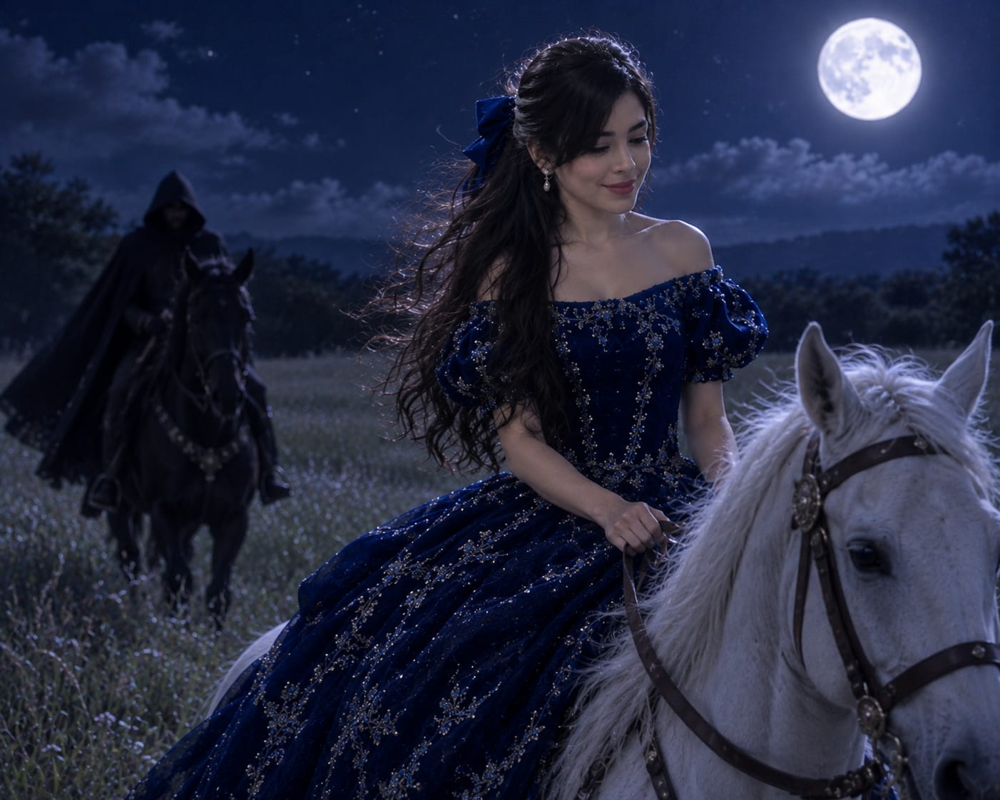

Para la princesa Abid
Escucha, princesa. La noche guarda algo que decirte:
La luna y la noche,
fulgor de una vida en el derroche;
derroche de la prístina belleza del alma,
belleza y poder que están a tus pies.
¡Oh, princesa de suspiros!
¡Oh, niña del dolor!
Deja el sueño y vive,
¡VIVE EN LA LIBERTAD QUE DESEAS!
Vive en la alegría que inspiras.
El dolor pasará,
pues pocos merecemos vivir en esa inmundicia.
Tu dolor, tu pérdida, no serán eternos,
pues aquel que te sigue desde la sombra,
aquel que solo desea lo mejor de ese brillo,
lo hace desde su pobre alma atormentada.
Vive, princesa Abid,
vive en la libertad de la felicidad,
vive lejos del dolor,
vive recordando lo mejor de los seres amados,
con la cabeza mirando a la luna,
con el orgullo que solo mereces,
con el orgullo de un alma que resplandece como el sol,
incluso en el eclipse.
